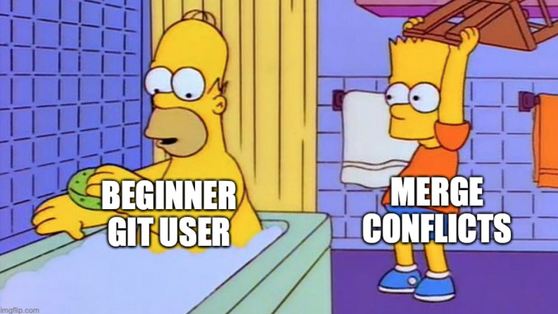

Background
Branching is a version control feature essential for collaboration and developing complex analyses. It allows multiple collaborators to work in parallel (or one data scientist working on multiple features) without interfering with each other. But as great as branches are, they do come with a learning curve, especially when it comes to the dreaded merge conflict1.

Goals
In this session, you’re going to practice branching, merging, and resolving merge conflicts. By the of the session, you will be able to resolve the merge conflict you created yesterday.
Instructions
Learn Git Branching
Learn Git Branching is an interactive tutorial for learning git commands. Complete lessons 1-3:
- Introduction to Git Commits
- Branching in Git
- Merging in Git
Create and resolve a merge conflict
We’re going to do this almost entirely at the command line, to give you more practice with shell commands and the git CLI.
Essential git CLI commands
git init [repo name] Create a repository
git add [file] Stage a file for commit
git commit -m "[message]" Commit changes with a message
git branch [branch name] Create a new branch from the current commit
git switch [branch name] Switch to another branch
git status Summarize status of repo, including uncommitted changes and the current branch
Essential shell commands
pwd Print working directory
ls List files
cd Change directory
mkdir Make a directory
touch Create a file
1) Create a new local git repository
Open a terminal. Navigate to a folder you can put your repo in. Create a new repository called foo. Create README.md, leave it empty. Commit your changes.
2) Create a branch
Create a new branch called bugFix. Switch to that branch. Check that you’re on the right branch.
3) Make some changes in one branch
Open README.md in a text editor. Add a line of text. Whatever you want. The world is your oyster. Close the text editor. Commit your changes.
4) Make conflicting changes
Switch back to the main branch.
Run cat REAMDE.md. Do you see your changes from step 3? If you’ve done everything correctly up to this point, the file should be empty. The changes you made in step 3 should be isolated in the bugFix branch.
Open README.md in a text editor again. Add a different line of text. Close the text editor and commit your changes.
5) Merge your branches
Merging works by bringing changes into the current branch. Since you’re currently in the main branch, you can bring the bugFix changes into main by running git merge bugFix. You should see a message like this:
Auto-merging README.md
CONFLICT (content): Merge conflict in README.md
Automatic merge failed; fix conflicts and then commit the result.6) Resolve your merge conflict
Inspect the contents of README.md at the command line. You should see the merge conflict notation:
<<<<<<< HEAD
[The changes you made in main]
=======
[The changes you made in bugFix]
>>>>>>> bugFixRun git status. Git will tell you you’re currently in the middle of a merge.
On branch main
You have unmerged paths.
(fix conflicts and run "git commit")
(use "git merge --abort" to abort the merge)
Unmerged paths:
(use "git add <file>..." to mark resolution)
both modified: README.mdOpen README.md in a text editor. Resolve the merge conflict by choosing the changes from either main or bugFix. Close the text editor, then commit your changes. Verify the merge is complete by checking the status of your repo.
7) Draw!
Draw the commit history of your repo. Find a partner and compare your drawings. Make edits as necessary. Confirm your drawing’s accuracy with an instructor.
Resolve yesterday’s merge conflict
You now have 99% of what you need to resolve yesterday’s merge conflict. There’s only one difference. Today, you learned how to merge two branches in the same repo. Yesterday, you created a conflict by making conflicting commits in the same branch on different local repos.
Woah, that was confusing. What exactly was the difference there?
Today’s merge conflict was between branches main and bugFix, which were both in your local repo.
Yesterday, your conflicting changes were both in the main branch, because you made edits in two different copies of the repo (Workbench and laptop).
In order to resolve the conflict, you first have to pull the remote version (which should have the changes you made on Workbench) down to your laptop.
Open your EDS 214 project in RStudio locally (not on Workbench). At the Terminal, run git pull. You should get the following error message.
hint: You have divergent branches and need to specify how to reconcile them.
hint: You can do so by running one of the following commands sometime before
hint: your next pull:
hint:
hint: git config pull.rebase false # merge
hint: git config pull.rebase true # rebase
hint: git config pull.ff only # fast-forward only
hint:
hint: You can replace "git config" with "git config --global" to set a default
hint: preference for all repositories. You can also pass --rebase, --no-rebase,
hint: or --ff-only on the command line to override the configured default per
hint: invocation.
fatal: Need to specify how to reconcile divergent branches.This is a really common error message that needs to be addressed once per repository. It’s telling you the same branch has conflicting edits (“divergent branches”) and git doesn’t know how you want it to handle the divergence. There are three options: merge, rebase, and fast-forward. We’re only teaching you the merge option in this class. Tell git to use that option by running git config pull.rebase false. This means “when I tell you to pull, if there’s a divergence, start a merge”.
Now try pulling again. You should see the familiar merge conflict message. Call git status and verify the issue is in the spaghetti code you wrote on Monday.
Open your spaghetti code. Find the conflict by searching for “<<<<<”. Resolve the conflict using the skills you learned today. Commit and push. Call an instructor over to verify your repo is still in good shape.
Congrats! You resolved the merge conflict!
Recap
Branching and merging let you and your collaborators work in parallel on the same code base. Although they carry a learning curve, they help avoid common problems like accidentally overwriting each others’ changes. And yes, merge conflicts do look scary. Words like “error” and “fatal” tend to show up a lot. But they’re actually doing you a huge favor by drawing your attention directly to the line(s) of code where you and your collaborator collided. Now that you have the skills to resolve these conflicts, you are much better equipped to collaborate on your capstone project!
Footnotes
Don’t worry, you’ll be ok.↩︎